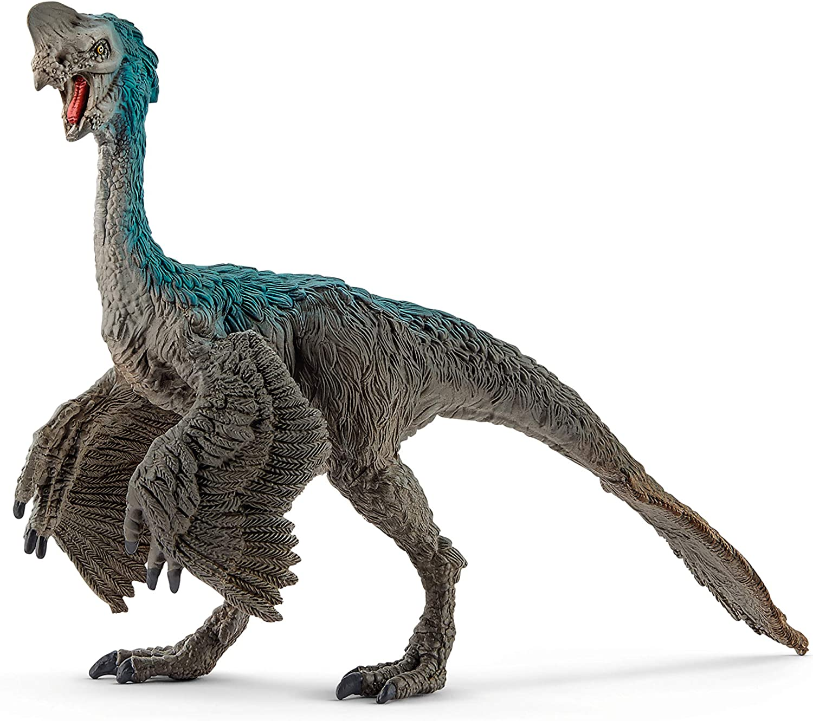

Brachiosaurus altithorax ("lagarto brazo de tórax alto"), castellanizado como braquiosaurio, es la única especie conocida del género extinto Brachiosaurus de dinosaurio saurópodo braquiosáurido, que vivió durante el Jurásico Superior, hace aproximadamente 154 a 153 millones de años, en lo que es hoy Norteamérica. Fue descrita por primera vez por Elmer S. Riggs en 1903 a partir de fósiles encontrados en el río del Gran Cañón, ahora Río Colorado del oeste de Colorado, en sedimentos de la famosa Formación Morrison, Estados Unidos. Brachiosaurus tiene el cuello extremadamente largo, un cráneo pequeño y gran tamaño general, todos los cuales son rasgos típicos de los saurópodos. Sin embargo, Brachiosaurus tiene proporciones que son diferentes de la mayoría de los saurópodos, siendo las patas delanteras más largas que las patas traseras, característica a la que hace referencia su nombre, y su cola era más corta en proporción a su cuello que otros saurópodos del Jurásico.
Brachiosaurus es el género que da nombre a la familia Brachiosauridae, que incluye a otros saurópodos similares. Gran parte de lo que se conoce sobre Brachiosaurus se basa de hecho en Giraffatitan brancai, una especie de dinosaurio braquiosáurido de la Formación Tendaguru de Tanzania que fue descrito originalmente por el paleontólogo alemán Werner Janensch como una especie de Brachiosaurus en 1914. Investigaciones posteriores muestran que las diferencias entre la especie tipo de Brachiosaurus y el material Tendaguru son lo suficientemente significativas para que el material de África deba ser colocado en un género propio. Varias otras especies potenciales de Brachiosaurus se han descrito desde África y Europa, pero se cree que ninguno de ellos pertenecía a Brachiosaurus.
Brachiosaurus es uno de los saurópodos más raros de la Formación Morrison. El espécimen tipo de B. altithorax sigue siendo el ejemplar más completo, y se piensa que solo debe haber un puñado de otros especímenes que pertenezcan al género. Brachiosaurus es considerado como un alto ramoneador, que probablemente hubiese mordisqueado o pellizcado la vegetación de la copa de los árboles posiblemente tan alto como 9 metros por encima del suelo. A diferencia de otros saurópodos, la representación de pararse sobre sus patas traseras en la película Parque Jurásico, es inadecuada. Brachiosaurus se ha utilizado como un ejemplo de un dinosaurio que era probablemente ectotérmico debido a su gran tamaño y su necesidad de alimentación, pero investigaciones más recientes han demostrado que habría sido de sangre caliente.
 |
 |
 |
|  |
 |
 |